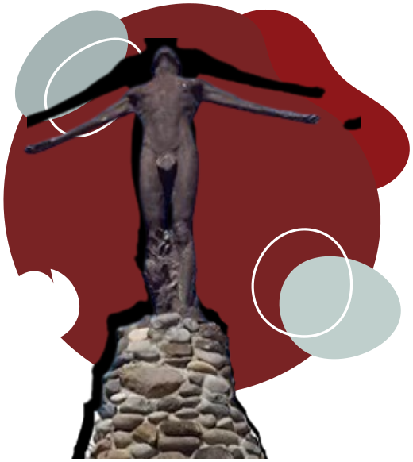
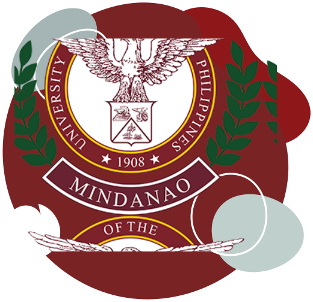

OUR HISTORY

Republic Act 7889, An Act Creating the University of the Philippines in Mindanao, was
signed into law by President Fidel V. Ramos on February 20, 1995. But the vision of
having a UP in Mindanao however started way before that.
The UP Alumni
Association-Davao Chapter, which was established on December 3, 1949, had wanted for
more than two decades for the establishment of a UP in Mindanao. As early as 1961, the
UP Summer School already
offered extension courses in Law, Business Administration and Education, with the old
location of the Davao Central Elementary School as venue.
On November 24 and 25, 1989, the UPAA Davao Chapter hosted the 12th UP Alumni Institute
with Senator Vicente Paterno as keynote speaker. UP President Jose Abueva, who attended
the conference, was confronted with the strong and united voice of about 630
alumni in attendance as well as the media and the business sector, all clamoring for a
resolution that would promote the establishment of a UP in Mindanao in Davao City. The
resolution was unanimously approved and adopted
by the Institute on November 25, 1989. This was submitted to the UPAA National and
endorsed to the Board of Regents.
The vision of UP in Mindanao began to
materialize when,
on the third regular session of the House of Representatives on April 30, 1990, 1st
District Representative Prospero C. Nograles introduced House Bill No. 30358, also known
as an “Act to establish the University of
the Philippines in Mindanao.”
A public hearing on HB No. 30358 was conducted
by Senator Edgardo Angara (then Chairman of the Senate Committee on Education) on
October 12, 1990 at the Davao Chamber of Commerce,
Kalakalan Hall. It was sponsored by Representative Nograles and Rodolfo del Rosario of
Davao del Norte. A strong sentiment for the establishment of a UP in Mindanao pervaded
the public hearing. To alleviate the strong
clamor for a UP in Mindanao, Abueva created instead the UP Consortium System, much like
the Open University.
When Abueva’s term ended, President Fidel V. Ramos
appointed Emil Q. Javier as UP President. President
Ramos had previously instructed President Javier to create a fact-finding committee
composed of Regents Oscar Alfonso, Vice-President for Planning Fortunato dela Peña,
Atty. Carmelita Yadao-Guno and Prof. Rogelio Cuyno.
The committee came to Davao for an ocular inspection of University of Southern
Philippines (USP) in Bago Oshiro.
After receiving the committee report, Javier did not pursue the plan to
convert USP to UP in Mindanao due to the resistance demonstrated by the USP faculty and
staff. Instead, he opted for congressional
action. At the same time, the committee also talked with the National Bureau of Plant
and Industry director Nerios Roperos for the segregation of 204 hectares of the BPI area
in Bago Oshiro for the UP in Mindanao campus.
The task of pursuing the House Bill for UP in Mindanao in Congress was given to Davao
City 3rd District Congressman Elias B. Lopez, as he was the only UP alumnus among the
Davao representatives.
Republic
Act 7889, the bill creating UP in Mindanao was finally enacted into law on February 20,
1995. On March 22 of the same year, the Board of Regents passed a resolution officially
creating the University of the Philippines
in Mindanao. To emphasize the importance of RA 7889 to the Mindanaoans, a reenactment of
the signing was held at the Central Bank, Davao City with President Fidel V. Ramos
himself in attendance.
The Lee Business
Center in J. Luna corner J. dela Cruz Streets and the Casa Mercado Building in Matina
served as UP in Mindanao’s home from March to September 1995, and from September to
January 1996, respectively.
On June
1996, the College of Arts and Sciences and the School of Management were created. After
a year, the CAS was split into the College of Humanities and Social Sciences and the
College of Science and Mathematics. The School
of Management was retained.
On February 20, the Oblation was installed in
Bago Oshiro during the University’s 3rd Foundation Anniversary. The Board of Regents
granted full autonomy to UP in Mindanao, on February
26, 1998, making it the sixth constituent unit of the UP System. Dean Rogelio V. Cuyno,
was elevated and installed as its 1st Chancellor on December 11, of the same year.
The 2nd Chancellor was Ricardo de Ungria, the 3rd Chancellor was Gilda C. Rivero, and the 4th Chancellor is Sylvia B. Concepcion. The 5th Chancellor is Larry N. Digal (term: March 2019-February 2021).
Reviewed: RAE, 24 August 2017
OUR VISION AND MISSION
Vision:
An internationally competitive graduate, research, and public service university in Mindanao, leading in the study of arts, cultures, and sustainable biosystems.
Mission Statement:
The University of the Philippines Mindanao provides distinctive interdisciplinary education, research & development, and public engagement that are responsive and relevant to the diverse sectors in Mindanao, and sustains Mindanao heritage and biodiversity through innovative systems and technologies.
Governing Laws
Republic Act 7889 - The University of the Philippines in Mindanao Act
Republic Act 9500 - The University of the Philippines Charter of 2008
Institutional Profile
UP Mindanao is the only UP constituent university in Mindanao with the primary mandate to provide equitable access to quality UP education to Mindanaoans. It offers academic programs in the fields of the humanities, architecture, mathematics, food, economics, social, natural, and computing sciences. As a graduate university, it offers PhD by Research, and graduate degrees in management, food science, urban and regional planning, and sports science. Its development agenda focuses on opening additional academic programs and new colleges in human kinetics, medicine, and engineering, to support Mindanao sports, health, technological, and bio-cultural diversity initiatives. With these, it aims to be an internationally competitive graduate, research, and public service university, primed to contribute to Philippine development.
CONTACT US

Trunk line:
(+63 82)2930863 and (+63 82)2930185
For UP College Admission inquiries, call our Registrar at (+63 082)293 0201 or
(+63)918 919 0259;
or
Email:
Assoc. Prof. Karen Joyce G. Cayamanda at
registrar.upmindanao@up.edu.ph
or
Mailing address:
UNIVERSITY OF THE PHILIPPINES MINDANAO BARANGAY MINTAL, DAVAO
CITY 8022 PHILIPPINES
or
website:
www2.upmin.edu.ph